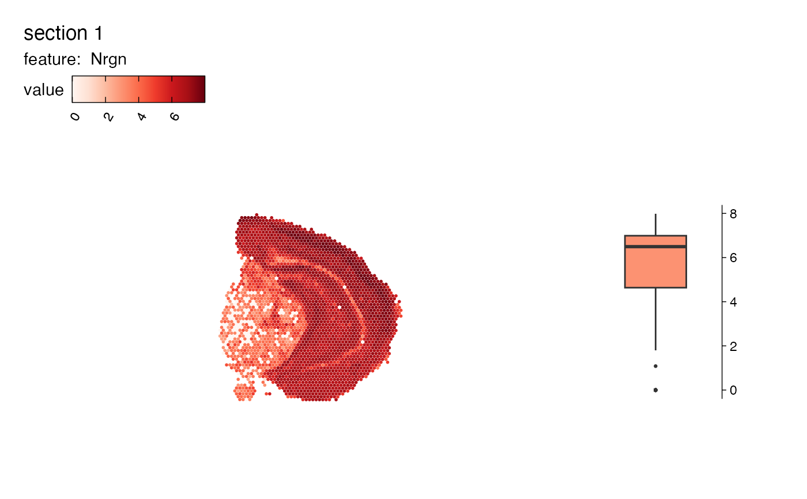
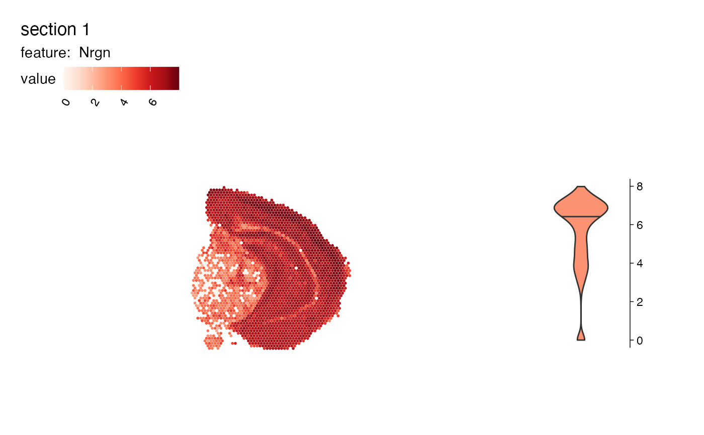
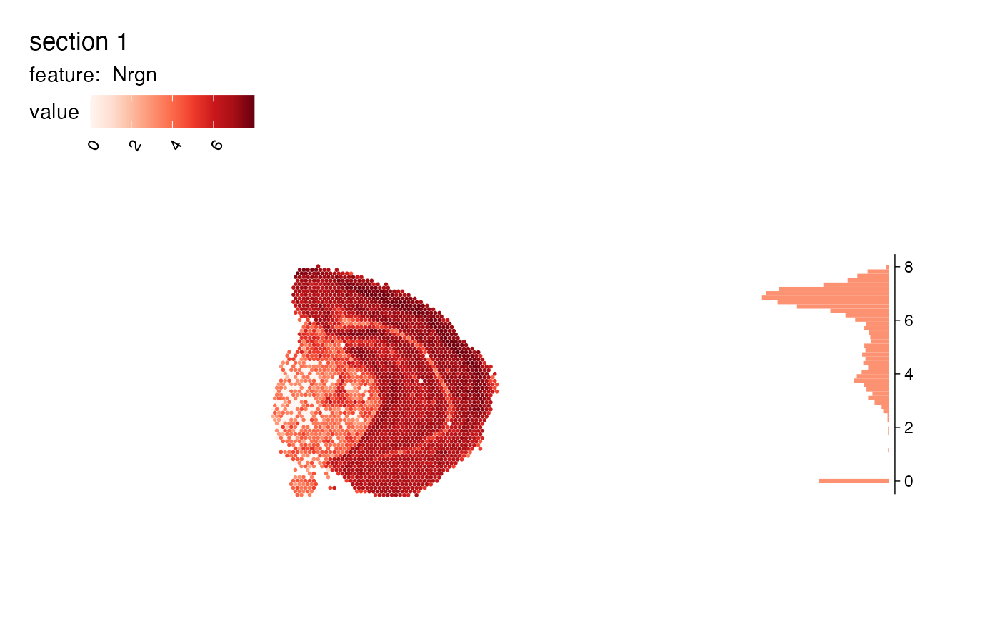

Map features spatially and add a summary plot next to it
MapFeaturesSummary.RdThis function is a wrapped for MapFeatures which allows you to
add a boxplot, histogram, violin plot or a density histogram showing the
distribution of the selected feature next to the spatial feature plot.
Usage
MapFeaturesSummary(
object,
features,
slot = "data",
subplot_type = c("box", "violin", "histogram", "density"),
image_use = NULL,
coords_use = "raw",
crop_area = NULL,
pt_size = 1,
pt_alpha = 1,
pt_stroke = 0,
scale_alpha = FALSE,
section_number = NULL,
label_by = NULL,
ncol = NULL,
colors = RColorBrewer::brewer.pal(n = 9, name = "Reds"),
fill_color = NULL,
scale = c("shared", "free"),
override_plot_dims = FALSE,
max_cutoff = NULL,
min_cutoff = NULL,
...
)Arguments
- object
An object
- features
A character vector of features to plot. These features need to be fetchable with
link{FetchData}- slot
Slot to pull features values from
- subplot_type
Select a summary plot to place next to the spatial plot:
"box" : boxplot
"violin" : violin plot
"histogram" : histogram
"density" : density histogram
- image_use
A character specifying image type to use
- coords_use
A character specifying coordinate type to use
- crop_area
A numeric vector of length 4 specifying a rectangular area to crop the plots by. These numbers should be within 0-1. The x-axis is goes from left=0 to right=1 and the y axis is goes from top=0 to bottom=1. The order of the values are specified as follows:
crop_area = c(left, top, right, bottom). The crop area will be used on all tissue sections and cannot be set for each section individually. using crop areas of different sizes on different sections can lead to unwanted side effects as the point sizes will remain constant. In this case it is better to generate separate plots for different tissue sections.- pt_size
A numeric value specifying the point size passed to
geom_point- pt_alpha
A numeric value between 0 and 1 specifying the point opacity passed to
geom_point. A value of 0 will make the points completely transparent and a value of 1 will make the points completely opaque.- pt_stroke
A numeric specifying the point stroke width
- scale_alpha
Logical specifying if the spot colors should be scaled together with the feature values. This can be useful when you want to highlight regions with higher feature values while making the background tissue visible.
- section_number
An integer select a tissue section number to subset data by
- label_by
Character of length 1 providing a column name in
objectwith labels that can be used to provide a title for each subplot. This column should have 1 label per tissue section. This can be useful when you need to provide more detailed information about your tissue sections.- ncol
Integer value specifying the number of columns in the output patchwork. This parameter will only have an effect when the number of features provided is 1. Otherwise, the patchwork will be arranged based on the
arrange_featuresparameter.- colors
A character vector of colors to use for the color scale. The colors should preferably consist of a set of colors from a scientific color palette designed for sequential data. Some useful palettes are available in the
RColorBrewer,viridisandscicoR packages.- fill_color
Fill color for summary plot
- scale
A character vector of length 1 specifying one of "shared" or "free" which will determine how the color bars are structured. If scale is set to "shared", the color bars for feature values will be shared across samples. If scale is set to "free", the color bars will be independent.
- override_plot_dims
A logical specifying whether the image dimensions should be used to define the plot area. Setting
override_plot_dimscan be useful in situations where the tissue section only covers a small fraction of the capture area, which will create a lot of white space in the plots.- min_cutoff, max_cutoff
A numeric value between 0-1 specifying either a lower (
min_cutoff) or upper (max_cutoff) limit for the data usingquantile. These arguments can be useful to make sure that the color map doesn't get dominated by outliers.- ...
Arguments passed to other methods
See also
Other spatial-visualization-methods:
AnglePlot(),
FeatureViewer(),
ImagePlot(),
MapFeatures(),
MapLabels(),
MapLabelsSummary(),
MapMultipleFeatures()
Examples
# Prepare Seurat object
se <- readRDS(system.file("extdata/mousebrain",
"se_mbrain",
package = "semla"))
se <- se |>
NormalizeData()
# Add boxplot
MapFeaturesSummary(se, features = "Nrgn", subplot_type = "box")

# Add violin plot
MapFeaturesSummary(se, features = "Nrgn", subplot_type = "violin")

# Add histogram
MapFeaturesSummary(se, features = "Nrgn", subplot_type = "histogram")

# Add density histogram
MapFeaturesSummary(se, features = "Nrgn", subplot_type = "density")